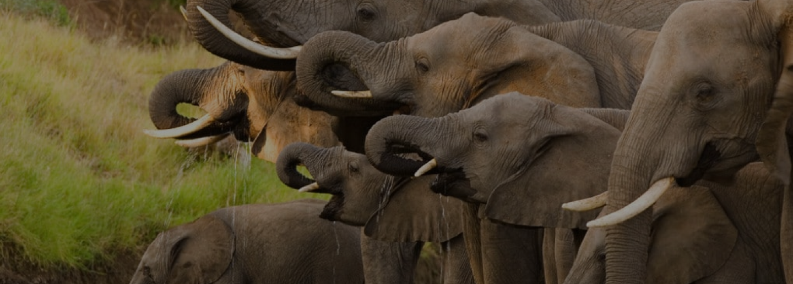

ORIGINE: ANIMALE TERRESTRE
ELEFANTE
L’elefante è un mammifero terrestre che vive in Africa, Sud-est asiatico e dall’India all’Indonesia settentrionale.
PERCHÈ È IN VIA DI ESTINZIONE?
L'elefante è a forte rischio poiché ancora oggi viene cacciato per le sue zanne di avorio pur essendo illegale e inoltre i loro habitat ideali sono sempre minori.
- Dimensioni: è uno dei più grandi animali terresti, raggiungere le 5 tonnellate di peso e i 3 metri di altezza.
- Vita media: 60/70 anni.
- Colore: manto, proboscide e zampe grigie,cuscinetti sotto le zampe che ammortizzano il loro peso più chiari e zanne d'Avorio.
- Alimentazione: frutta, foglie e rami.
- Stile di vita: è un animale che si muove a branco, soprattutto le femmine e i loro piccoli.
- Curiosità: è un animale che ha bisogno di tantissima acqua non solo per dissetarsi ma anche per farsi tanti bagni per regolare la loro temperatura corporea.